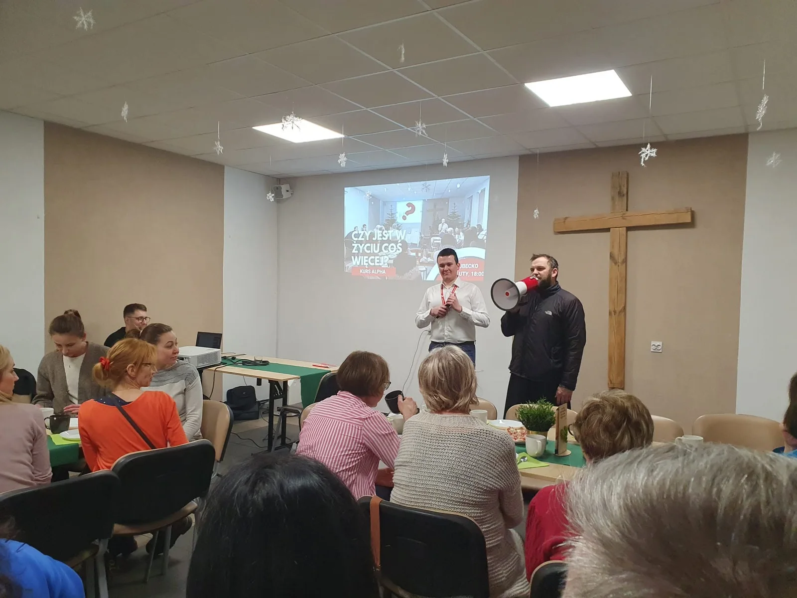
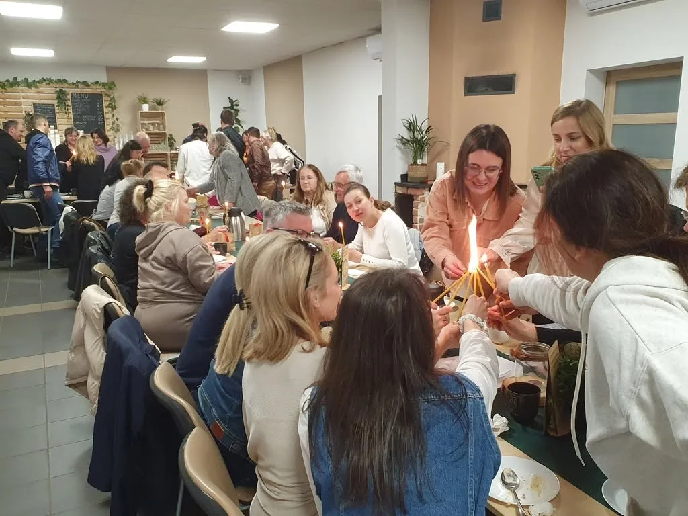
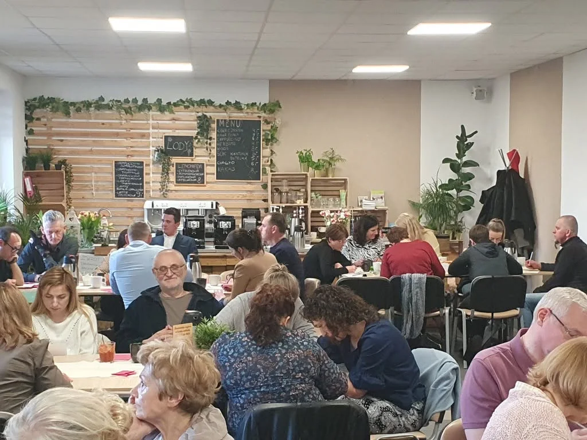
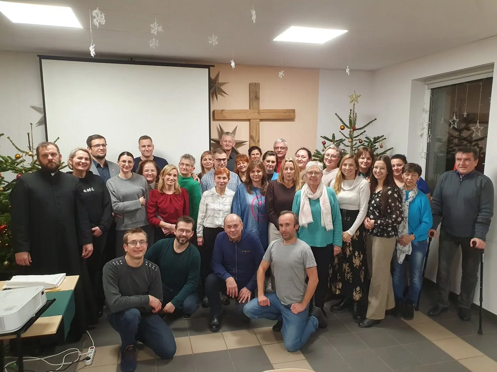
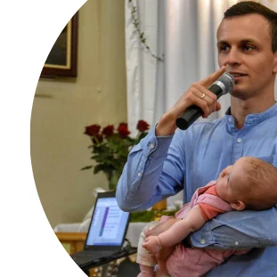

Wspólna kolacja
Zaczynamy od prostego posiłku. To dobry czas, by się poznać i poczuć swobodnie.
Regionalne Centrum Alpha w Lubecku
Kolacja, film i rozmowa mogą otworzyć przestrzeń na pytania o życie, wiarę i Boga. Pomagamy parafiom i wspólnotom rozpocząć tę drogę.
Szukasz Alpha dla siebie?
Czym jest Alpha?
Prosty rytm spotkania pomaga zbudować atmosferę, w której można poznać ludzi, usłyszeć inspirujące treści i swobodnie się nimi podzielić.
Zaczynamy od prostego posiłku. To dobry czas, by się poznać i poczuć swobodnie.
Oglądamy materiał, który otwiera temat spotkania i prowadzi do najważniejszych pytań.
Każdy może powiedzieć, co myśli, zadać pytanie albo po prostu posłuchać innych.
Nasza historia
Po dwóch odwołanych Kursach Nowe Życie nie mieliśmy gotowego rozwiązania. Postanowiliśmy najpierw sprawdzić Alpha we własnym gronie. Z małych, domowych spotkań wyrosły kolejne edycje, Alpha dla młodzieży i pomoc innym parafiom.
Poznaj historię Lubecka

Zacznij Alpha
Opowiedz nam o swojej parafii, zespole i pytaniach. Wspólnie nazwiemy pierwszy krok.
Zobacz Alpha od strony ekipy i przekonaj się, jak spotkanie wygląda w praktyce.
Pomożemy zbudować ekipę, wyjaśnimy role i przeprowadzimy szkolenie.
Będziemy towarzyszyć Wam podczas przygotowań i pierwszej edycji Alpha.

Szersza perspektywa
Alpha może stać się początkiem drogi: od pierwszych pytań, przez odkrywanie wiary, aż po wejście do ekipy i branie odpowiedzialności za innych. Tak regularna ewangelizacja zaczyna zmieniać kulturę parafii.
Zobacz drogę odnowyNasz zespół
Jesteśmy częścią Regionalnego Centrum Alpha w Lubecku. Wspieramy ludzi, parafie i wspólnoty, które chcą rozpocząć Alpha.
Koordynacja RCA i szkolenia
Alpha i współprowadzenie szkoleń
Alpha i Alpha dla młodzieży

Zespół RCA Lubecko
Zespół RCA Lubecko